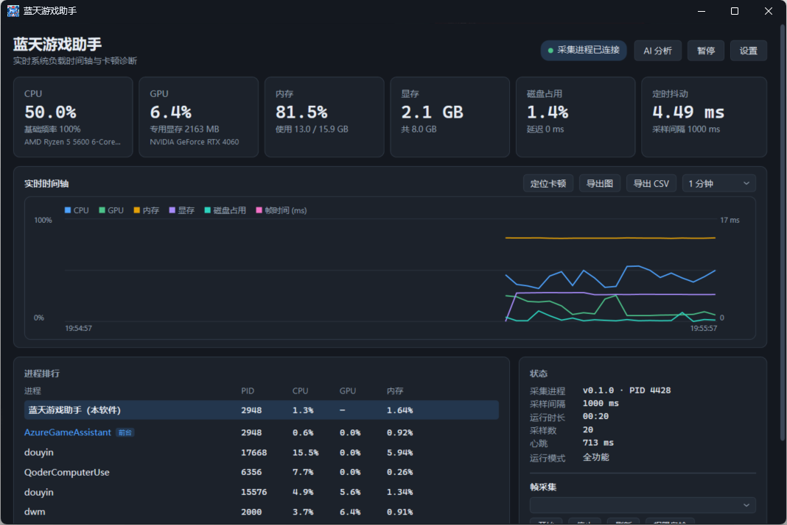
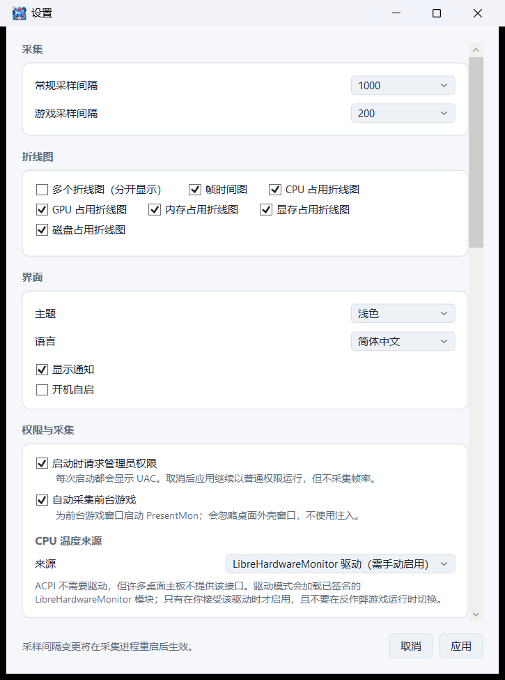

GAME STUTTER LAB / 本地运行
把一次卡顿，拆成可解释的证据链。
导入 PresentMon 帧数据，或直接点一个示例场景。这里会给出帧率曲线、1% Low、卡顿事件、主因判定与可执行的调整建议—— 和桌面版「蓝天游戏助手」用的是同一套判定思路。
- CSV 全程在浏览器内存解析
- 不上传、不登录、不联网分析
- 示例场景 3 秒出报告
报告区还是空的
选一个示例场景，或拖入自己的 PresentMon CSV。3 秒内会生成完整报告，不需要注册。
体感评分
86/100
主因：CPU / 引擎瓶颈
帧时间被 CPU 提交与引擎逻辑拖住，GPU 还有余量。
- 平均 FPS
- —fps
- 1% Low
- —fps
- 0.1% Low
- —fps
- 卡顿事件
- —次
- 最长单帧
- —ms
- 有效时长
- —s
数据质量：—
判定依据
优先尝试
最明显的卡顿
HOW IT THINKS
四步判定，不做玄学
和桌面版一致：先确认数据是否可信，再谈帧率和卡顿；每条结论都能回到具体证据。
-
01
解析与对齐
按表头识别 PresentMon 字段，不硬编码列序；把帧间隔、GPU 活跃时间与显示时间对齐到同一时间轴。
-
02
质量先行
超过 1 秒的断帧视为采集缺口，先从统计中剔除并单独标注，避免把「没采到」当成「游戏卡」。
-
03
事件化卡顿
以中位数帧时间为基准，帧时间超过 2 倍且大于 33ms 记为卡顿；500ms 内连续卡顿合并成一次事件。
-
04
证据归因
用 GPU 忙碌占比、1% Low 与卡顿频率交叉判断 CPU / GPU / 加载 / 采集中断，输出可执行的调整顺序。
DESKTOP COMPANION
网页版是体检，桌面版是长期监测
桌面版用 PresentMon 抓真实帧、用传感器边车读温度与功耗，再把卡顿、会话和归因记录在本地。

- 实时帧率与低帧每秒刷新 FPS、平均帧、1% Low，并在短暂无帧时保持读数。
- 卡顿自动标记帧、显示、CPU、GPU、内存、磁盘多信号评分，自动过滤误报。
- 会话录制与回放一键标记卡顿，记录前后各 15 秒，生成可回看的会话与报告。
- 本地归因报告7 类主因规则，断帧与尖峰分开判断，不把采集缺口算作游戏问题。
- 反作弊安全模式不注入、不绕过；安全模式下不启动 PresentMon 与传感器，只保留系统指标。
30 分钟托盘基线 · 本机实测
全部 PASS。内存与占用是项目的硬约束：只做采样与本地分析，常驻后台也不打扰游戏。

START IN 5 STEPS
评委照着点，就能用起来
- 1
打开本页，点「团战掉帧」示例。
- 2
看体感评分、1% Low 和时间轴上的红色卡顿标记。
- 3
读「主因判定」与「判定依据」，确认结论有证据。
- 4
拖入自己的 PresentMon CSV，或换一个示例场景对比。
- 5
下载报告，按「优先尝试」逐条调整后再测一次。
没有 CSV？桌面版「帧采集」面板支持导出；也可以在浏览器里直接体验四个内置场景，全部数据在本地生成。
BUILT WITH QODER
从需求文档到公网站点，都由 Qoder 完成
这个项目不是一次性的 demo：先写需求和开发文档，再用 Qoder 分阶段实现桌面端、测试和这個网站。
-
需求与架构
用 Qoder 把「游戏卡顿归因」拆成需求文档、开发文档与调研，先定指标口径与隐私边界。
-
桌面端实现
WPF 界面、采集进程、共享内存、传感器边车、会话录制与 AI 分析，按里程碑逐步落地。
-
测试与自动化
325 项单元测试、22 项 UI 冒烟和资源预算断言全部由 Qoder 编写并跑通，Release 0 警告。
-
网页版与发布
把同样的帧统计与归因规则改写成浏览器端 TypeScript/JavaScript，并用 Qoder Sites 部署公网。
PRIVACY & LIMITS
边界说清楚，结论才可信
这个网页
- CSV 只在当前浏览器内存中解析，关闭页面即消失。
- 没有账号体系，不收集设备信息，不写 Cookie。
- 示例数据由本地生成，不代表任何真实玩家的机器。
桌面版
- 不注入游戏进程、不读取窗口标题，不绕过反作弊。
- API Key 只存 Windows 凭据管理器，不进入设置文件与日志。
- 诊断与日志在本地脱敏，路径、用户名与密钥不会上传。
结论的边界
- 网页版只能看到帧与 GPU 时间，无法判断具体后台进程；桌面版会补齐进程归因。
- 没有温度与功耗数据时，不会把降频当成结论。
- 超过 1 秒的采集缺口会被排除，不用它推断游戏性能。